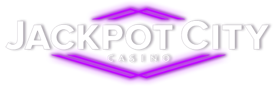

Operator Audit · Updated July 2026

Jackpot City Casino Review 2026 (Canada)
One of the most trusted names in online gaming — live since 1998 and licensed by the Kahnawake Gaming Commission. A C$1,600 welcome bonus, daily million-dollar jackpot spins, Interac banking and a six-tier loyalty club. Here's how Jackpot City scores against our fixed Safety Index.
Updated July 2026 · Fact-checked by Daniel Fournier
The short version
Jackpot City review: our verdict at a glance
Jackpot City is one of the true veterans of online gaming. Launched in 1998, it has spent more than a quarter of a century building the kind of reputation that newer casinos can only aspire to, and it remains one of the most recognisable and trusted brands available to Canadian players. It's operated by Baytree Interactive Ltd and licensed by the Kahnawake Gaming Commission — a regulator based in Quebec that has overseen online gaming for Canadian-facing operators for decades. For this Jackpot City review we scored it 9.0 out of 10 on our Safety Index, one of the highest ratings we award.
That score is driven overwhelmingly by trust. A casino that has paid players reliably for more than 25 years, under a stable licence, with a clean dispute record, is exactly what our Safety Index is designed to reward. On top of that solid foundation, Jackpot City delivers the things Canadian players actually want: Interac and Canadian-friendly banking, a C$1,600 welcome bonus spread across four deposits, daily spins on the Mega Millionaire Wheel with a shot at a C$1,000,000 jackpot, and a famous library of progressive-jackpot slots including the Mega Moolah family.
There's very little to hold against it. The welcome bonus carries fairly standard 35x wagering and the usual game-weighting rules, and the max-withdrawal cap on bonus play (6x your first deposit) is worth knowing before you claim. But for players who value security, a proven payout record and genuine longevity over the biggest possible headline bonus, Jackpot City is about as safe a pick as the offshore-facing market offers Canadians.
Welcome offer
Jackpot City welcome bonus for Canada
A 100% match on each of your first four deposits — up to C$1,600 total — plus daily spins for a chance at a million. Minimum deposit C$10; wagering 35x; valid 7 days from registration. 19+. Terms apply.
First deposit
Second deposit
Third deposit
Fourth deposit
Daily million-dollar spins
From your first C$10 deposit, you get 10 daily spins on the Mega Millionaire Wheel™ — 10 chances every day at the game's CA$1,000,000 jackpot. Claimable once per day; spins expire 30 days after your last deposit.
Daily Streak
Log in on 7 consecutive days to complete a streak and you could earn a guaranteed prize each time — a simple, no-deposit way to add value just for showing up.
Jackpot City's welcome is refreshingly simple: match your first four deposits at 100% up to C$400 each, for up to C$1,600 in bonus funds. Each deposit only needs C$10 to qualify, the bonus credits automatically (no code required), and you have 7 days from registration to claim the full package. The daily Mega Millionaire Wheel spins are the fun sweetener — genuine daily shots at a seven-figure jackpot that keep the experience exciting well beyond the welcome offer.
As with any welcome bonus, it pays to know the mechanics. Wagering is 35x the bonus amount, and game weighting applies: slots contribute 100% (though NetEnt slots count 50% and re-spin slots 10%), roulette, table poker and most video poker count 8%, classic blackjack and a few specific video pokers count 2%, and baccarat, craps, Red Dog, Sic Bo and progressive jackpots count 0%. The maximum bet while a bonus is active is C$8 per round, and — importantly — withdrawals from the welcome bonus are capped at 6x your first deposit, with the bonus expiring on cash-in. None of this is unusual for the industry; it's just worth reading before you opt in.
Trust & licensing
Is Jackpot City safe and legit?
This is where Jackpot City earns its high score. Safety is the most important input into our Safety Index, and few casinos serving Canada can match Jackpot City's combination of longevity and regulation. The site is operated by Baytree Interactive Ltd (company number 69691), a Guernsey-registered company at Kingsway House, St Peter Port, and it is licensed by the Kahnawake Gaming Commission under licence number 00892, issued 16 February 2022. The Kahnawake Gaming Commission, based in the Mohawk Territory of Kahnawà:ke in Quebec, is one of the oldest online-gaming regulators in the world and has licensed Canadian-facing operators since 1999.
Beyond the paperwork, the track record is the real story. Jackpot City has operated continuously since 1998 — more than 25 years of paying players, honouring bonuses and building a reputation. That kind of history is the single strongest signal of trust, and it's why our Licensing & Trust (9.2) and Dispute Record (9.1) pillars sit near the top of our scale. The casino uses the latest SSL encryption to protect personal and banking data, and applies standard KYC identity checks — occasionally requesting a utility bill and photo ID before larger withdrawals — which is normal, protective industry practice.
The only mild frictions are the ones common to almost every casino: verification can add a step to your first withdrawal, and the welcome-bonus terms include a 6x-deposit withdrawal cap and standard game weighting. These are transparency features, not red flags — the terms are published in full and applied consistently. For a Canadian player prioritising a genuinely safe, established, well-regulated casino, Jackpot City is one of the most reassuring options on the market.
Brand file
Jackpot City at a glance
- Launched
- 1998
- Operator
- Baytree Interactive Ltd (reg. 69691, Guernsey)
- Licence
- Kahnawake Gaming Commission — No. 00892 (issued 16 Feb 2022)
- Welcome bonus
- Up to C$1,600 (4 × 100% up to C$400) + daily jackpot spins
- Wagering
- 35x
- Min. deposit
- C$10
- Payout speed
- 1–3 business days (web wallets faster)
- Progressive jackpots
- Yes — incl. Mega Moolah family
- Live dealer
- Yes
- Mobile app
- Yes — plus responsive mobile site
- Canadian players
- Accepted (outside Ontario's regulated market)
Cashier
Banking & payouts
Jackpot City offers a wide, Canada-focused cashier — Interac and web wallets alongside cards, prepaid vouchers and crypto — all secured with SSL encryption and free of casino-side fees on most methods.
| Method | Type | Deposit | Withdrawal | Payout time |
|---|---|---|---|---|
| Interac | Bank transfer | ✓ | ✓ | 1–3 days |
| Visa | Card | ✓ | ✓ | 1–3 days |
| Mastercard | Card | ✓ | — | — |
| iDebit | Web wallet | ✓ | ✓ | 24–28 hrs |
| Instadebit | Bank transfer | ✓ | ✓ | 24–48 hrs |
| MuchBetter | Web wallet | ✓ | ✓ | 24–48 hrs |
| Neosurf | Prepaid voucher | ✓ | — | — |
| paysafecard | Prepaid voucher | ✓ | — | — |
| Bank Transfer | Bank transfer | ✓ | ✓ | 1–3 days |
| Crypto (BTC / ETH / LTC) | Cryptocurrency | ✓ | ✓ | Instant deposit |
For Canadian players the banking line-up is excellent. Interac is front and centre for the deposit most Canadians reach for first, joined by iDebit and Instadebit for bank-linked payments, MuchBetter as a modern web wallet, and Neosurf and paysafecard for prepaid, no-card play. Visa and Mastercard cover cards, and Jackpot City's crypto casino option adds Bitcoin, Ethereum and Litecoin with instant, blockchain-processed deposits for players who want speed and privacy.
Withdrawal times are competitive and clearly published: web wallets are quickest, with iDebit around 24–28 hours and Instadebit and MuchBetter around 24–48 hours, while Interac, Visa and bank transfers take 1–3 business days. The main variable, as at any regulated casino, is identity verification — for larger cash-outs you may be asked for a utility bill and photo ID, which you can upload through your account. Get that done early and payouts run smoothly. Note that some methods (Mastercard, Neosurf, paysafecard) are deposit-only, so you'll nominate an alternative for withdrawals.
The library
Games & jackpots
Jackpot City built its name on jackpots, and the library reflects it — a deep slots shelf, classic and modern tables, a live-dealer floor and some of the biggest progressive jackpots in the business.
Slots & progressive jackpots
Slots are the heart of Jackpot City, spanning classic three-reel games, feature-rich video slots and the progressive jackpots the brand is famous for — headlined by the Mega Moolah family, whose network jackpots regularly climb into the millions. The daily Mega Millionaire Wheel adds a further seven-figure hook. If chasing a life-changing win is your thing, few Canadian-facing casinos have a stronger jackpot pedigree.
Tables, live dealer & app
Beyond slots, you'll find a full set of table games — multiple blackjack, roulette (European, French and American), baccarat, poker and video poker variants — plus a live-dealer casino that streams real croupiers for blackjack, roulette and more. Jackpot City also offers a dedicated casino app alongside its responsive mobile site, so the full library, cashier and daily spins travel with you on iOS and Android.
Rewards
The Jackpot City loyalty programme
Free to join and automatic from your first bet, the loyalty programme rewards cash wagers with points you can exchange for bonus credits, climbing six tiers as you play.
Every new account starts at Bronze, and every cash wager earns loyalty points — with some games earning at a higher rate than others. Points can be exchanged in set increments for bonus credits, which land in your bonus balance for continued play. As you accumulate points you climb through Silver, Gold, Platinum and Diamond up to the invitation-level Privé tier, with each level unlocking access to more exclusive promotions and richer rewards. It's a classic, transparent loyalty ladder that rewards regular play without gimmicks.
Help
Customer support
Support is available through 24/7 live chat and email, and as a long-established brand Jackpot City has a mature, responsive help desk for deposit, bonus and verification questions. The site's help centre and FAQs cover most common queries, and the KYC process — while occasionally requiring documents for larger withdrawals — is handled directly through your account. It's the kind of dependable, well-staffed support you'd expect from an operator with more than two decades of experience.
The balance sheet
Jackpot City pros and cons
Strengths
- + Trusted, established brand — operating since 1998
- + Kahnawake Gaming Commission licence & clean record
- + Famous progressive jackpots (Mega Moolah family)
- + Daily Mega Millionaire Wheel spins at a C$1M jackpot
- + Strong Canadian banking incl. Interac + crypto
- + Dedicated casino app and six-tier loyalty club
Watch-outs
- – Welcome winnings capped at 6x your first deposit
- – Standard 35x wagering with game weighting
- – C$8 max bet while a bonus is active
- – Some methods (Mastercard, vouchers) are deposit-only
- – Not registered with iGaming Ontario
Questions & answers
Jackpot City FAQ
Is Jackpot City Casino safe and legit for Canadian players?
Yes. Jackpot City is one of the longest-running online casinos, live since 1998, and is operated by Baytree Interactive Ltd under a Kahnawake Gaming Commission licence (No. 00892). It uses SSL encryption, applies standard KYC checks and scores 9.0/10 on our Safety Index — one of the highest scores we award.
What is the Jackpot City welcome bonus?
New Canadian players get a 100% match up to C$400 on each of their first four deposits — up to C$1,600 in total. The minimum deposit is C$10, the offer is valid for 7 days from registration, and wagering is 35x. You also get 10 daily spins on the Mega Millionaire Wheel for a chance at a C$1,000,000 jackpot.
How long does Jackpot City take to pay out?
Most withdrawals take 1–3 business days once verified. Web wallets are quickest — iDebit around 24–28 hours and Instadebit/MuchBetter around 24–48 hours — while Interac, Visa and bank transfers take 1–3 business days. Completing identity verification early avoids delays.
What are the Jackpot City bonus terms?
Wagering is 35x the bonus. Slots count 100% (NetEnt slots 50%, re-spin slots 10%), table games/roulette/most video poker 8%, classic blackjack 2%, and baccarat/craps/progressives 0%. The max bet while a bonus is active is C$8 per round, and withdrawals from the welcome bonus are capped at 6x your first deposit.
Can I use Interac at Jackpot City?
Yes. Interac is one of the most popular options for Canadians at Jackpot City, alongside Visa, Mastercard, iDebit, Instadebit, MuchBetter, Neosurf, paysafecard, bank transfer and crypto (Bitcoin, Ethereum, Litecoin). The minimum deposit is C$10.
What is the Jackpot City loyalty program?
Every cash wager earns loyalty points that can be exchanged for bonus credits. Players climb six tiers — Bronze, Silver, Gold, Platinum, Diamond and Privé — with higher tiers unlocking exclusive promotions and better rewards.
Does Jackpot City accept cryptocurrency?
Yes. Jackpot City supports leading cryptocurrencies including Bitcoin, Ethereum and Litecoin, with deposits processed instantly via blockchain for fast, private funding.
The verdict
A trusted, jackpot-rich veteran — score 9.0 / 10.
Jackpot City is one of the safest, most established casinos a Canadian player can choose. More than 25 years of reliable operation, a Kahnawake licence, famous progressive jackpots and strong Interac banking add up to a genuinely reassuring package. The bonus terms are standard and the 6x-deposit cap is worth noting, but if trust and a proven payout record top your list, this is a top pick.
19+. Play responsibly. Bonuses carry terms and wagering; offers can change. If gambling stops being fun, see our responsible gambling resources.